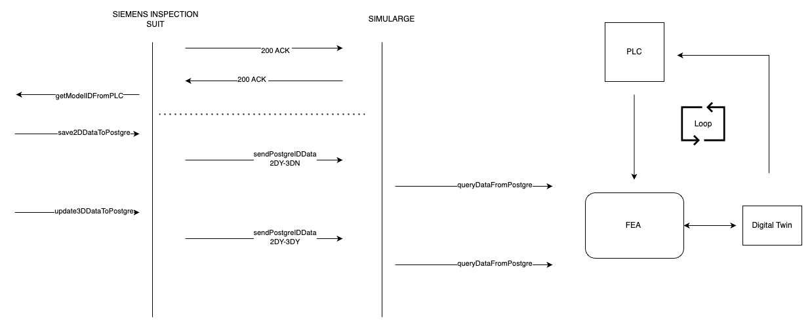
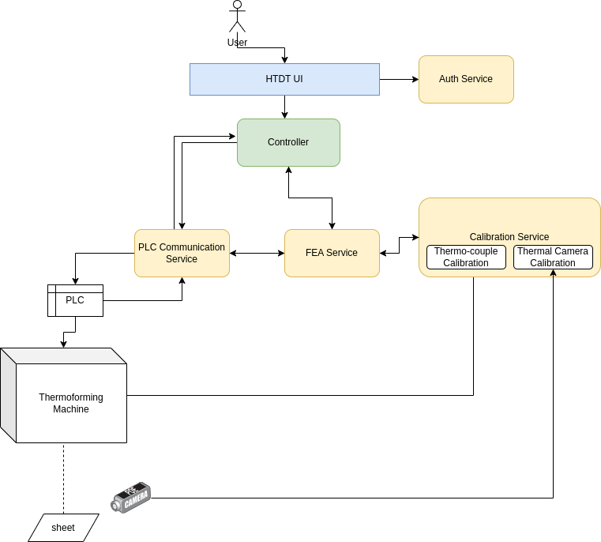
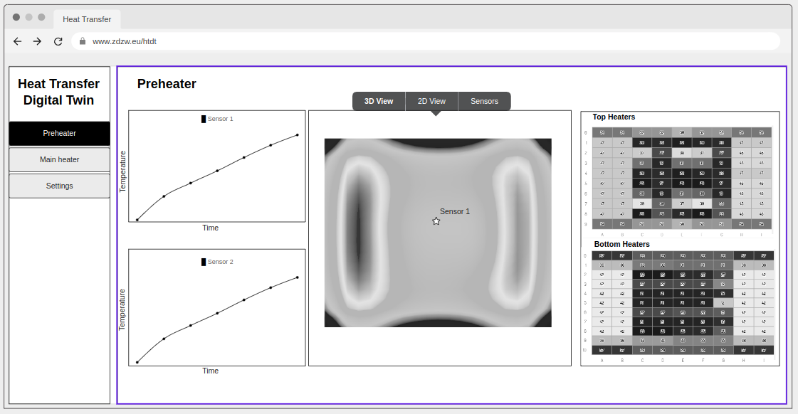
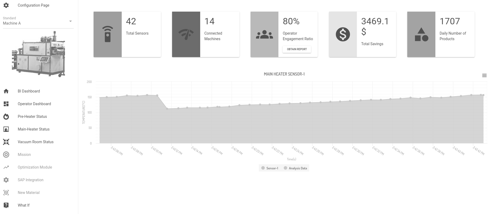
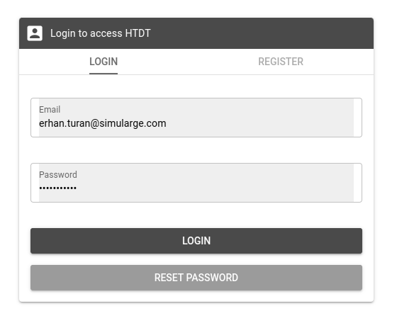
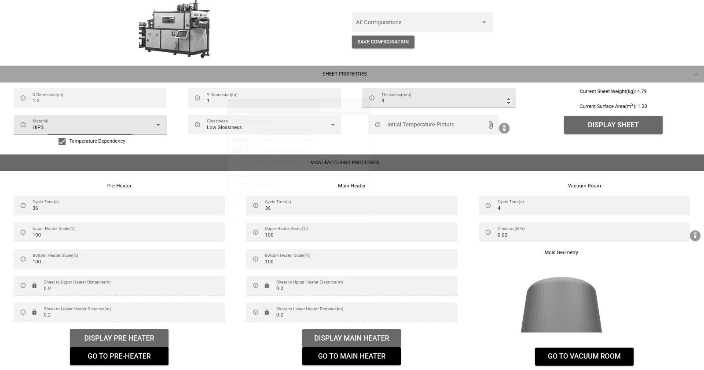
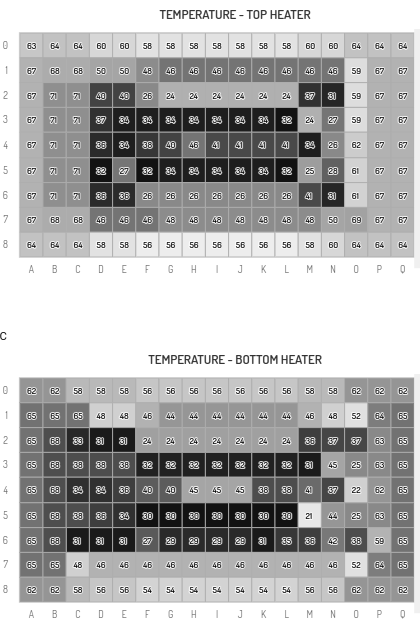

Heat Transfer Digital Twin
General Description
Heat Transfer Digital Twin (HTDT) is a software package specifically designed for manufacturing operations that are based on heating and cooling processes. The system has simulation capabilities based on Finite Element Analysis on top of integrating real time Thermocouple (TC) as well as Infrared (IR) Camera readings. Specifically in ZDZW project, this package will be utilized to create a Digital Twin of Thermoforming process.
Top Ten Functionalities
1. Heat Transfer Simulation
This functionallity is the related to the base module where thermal calculations are performed with given material, geometric settings and boundary conditions. This function can handle all three mode of heat transfer, namely conduction, convection (forced or free) and radiative. In thermoforming setting, mainly conduction and radiative modes are dominant. Finite Element Method is used to discretize partial differential equations.
Associated Function IDs:
- HTINIT, HTSOLVE, HTDT
2. Steady State and Transient Formulation
This is where the temporal behaviour of the solver is set. Both steady and unsteady (i.e transient) simulations can be performed. For Steady State formulations, the material properties are not important, only the geometric setup and boundary conditions are needed. In transient formulation, time increment, material properties (density, conductivity, specific heat) and start-end time values are needed. Depending on the discretization approach, both explicit and implicit formulations can be applied.
Associated Function IDs:
- HTTIME
3. Parameteric Geometry Definition
HTDT has the ability to create fundamental shapes that are frequently used in engineering, including boxes, parallelpiped geometris, cylinder and their variations. In thermoforming, base shape is always a rectangular prism with a thickness around 2-8 mm and width and depth ranging from 1m to 3m's. To simplfy the setup of the digital model, data can be received from factory database and reflected onto the digital model.
Associated Function IDs:
- HTINIT, HTCONNECT
4. Parameter Tuning for radiative and material constants
Even if raw materials are pure and delivered with pre-measured material properties, depending on the nature of the operations, changes on the equipment (aging, different season,) more realistic estimations on parametric settings are needed. This functionality is useful to approximate required parameters for HTINIT. Further, view factor estimations are also needed to perform Radiative heat transfer calculations. This function also enables the tuning for vf's.
Associated Function IDs:
- HTFIT, VFCALC
5. Calibration with Thermocouple Sensor data
Numerical results achieved out of the finite model is generally for a perfect model. To capture realistic effects on the machine, a feedback system is required to collect sensor data and use it to improve the prediction. This functionality is focused in calibrating the numerical model, by measuring the temperature on a known location where the numerical value is compared to real measurement. Using this information, an information is passed to parameter settings so that it can be updated to minimize the error between the sensor data and numerical approximation.
Associated Function IDs:
- HTFIT, HTCONNECT
6. Thermal Camera Input for enhanced approximation
Similar to TC calibration, this functionality is also focused on getting external data and using it to improve the prediction of the Digital Twin. Using IR data, instead of getting just one point data, a map of temperature readings will be received which can be used to offer a more optimized and even improvement of the thermal map.
Associated Function IDs:
- HTFIT, HTCONNECT, SIE_FUNCTIONS
7. Optimization based on temperature target
This function can create a pre-defined temperature maps on the plastic sheet. Optimization is applied on the machine parameters through heater array so that the changes can be used to modify the distribution on the thermal sheet.
Associated Function IDs:
- HTOPT, HTCONNECT
8. Optimization based on cycle time target
This function is focused to keeping the temperature map on the plastic sheet fixed but creating a setup on the machine where the cycle time can be modified depending on the target of the factory operators/engineers while changing the temporal parameters. Using this functionality, throughput on the machine can be increased.
Associated Function IDs:
- HTOPT
9. Heater Map Tuning
To focus on energy related KPIs, heater map array can also be tuned automatically. This is also valid for new product introduction, where a new type mold will be used on the thermoforming machine. Using this function, heat map array can be created before initiating the operation and can be updated on the fly why the system starts running.
Associated Function IDs:
- HTOPT
10. Failed Heater Compensation
In cases where one or more heaters on heater-array is defective - i.e. either does not function or underperforms, then the Digital Twin stars offering an automated heater compensation where the defective heater is removed from the setup by adjusting the PLC while fixing the neighbouring heaters around the problematic element so that the targer temperature map can still be achieved while avoiding down-time for maintanance.
Associated Function IDs:
- HTOPT, HTCONNECT
Architecture Diagram


Image Overview
Initial Mockup

Real Application (In Progress)
Dashboard

Auth

Configuration

Main Heaters

Hardware Components
The Digital Twin only requires a cloud/on-prem server to run. Hardware requirement related to TC or IR data could be delivered from external libraries or services.
Computation Requirements
8-core Processor with 16 GB RAM and 1TB SSD with ethernet connection is required to run the system. The OS of the server should a linux, preferabble a Ubuntu Release 20+
Installation Procedure
Step by step on how to install the application: * Standalone dockerized system. * Manual Installation
Manual Installation Requirements
Vue.js, Quasar, Python, NumPy, CalculiX, PostgreSQL, Flask
How To Use
- BI (Business Intelligence) Dashboard highlights critical KPIs of the thermoforming process.
- Configuration page set the dimension and the material of the working material, i.e. the sheet. Default material is HIPS.
- Cycle time, Heater Array scaling ratio can also be set on this menu.
- Switch between pre-heater and main-heater menus to monitor sensor data on top of prediction of the thermal profile of the sheet.
Additional Learning Materials
A Walkthrough YouTube video will be added